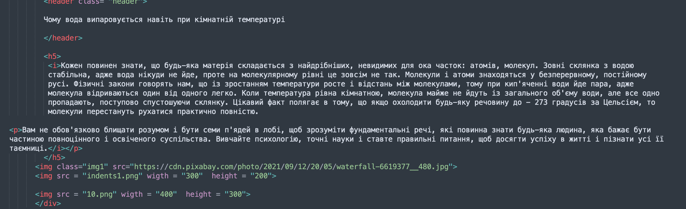
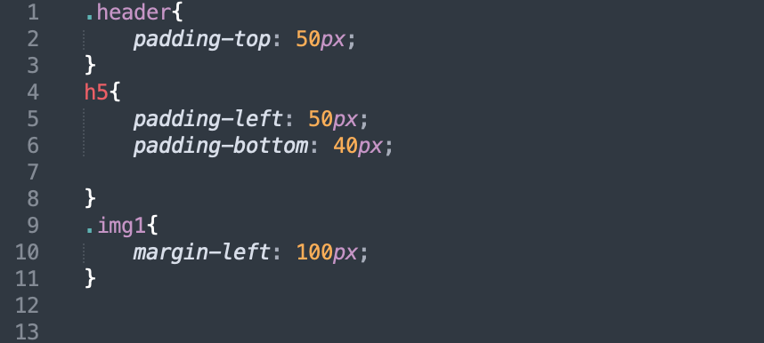
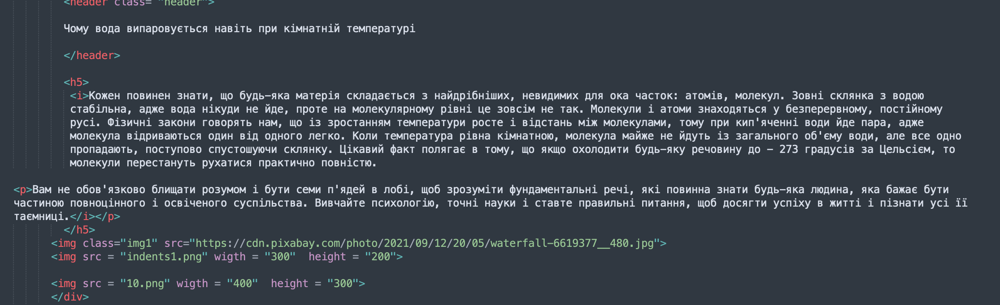
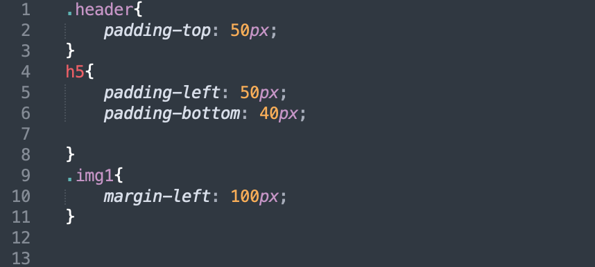

Кожен повинен знати, що будь-яка матерія складається з найдрібніших, невидимих для ока часток: атомів, молекул. Зовні склянка з водою стабільна, адже вода нікуди не йде, проте на молекулярному рівні це зовсім не так. Молекули і атоми знаходяться у безперервному, постійному русі. Фізичні закони говорять нам, що із зростанням температури росте і відстань між молекулами, тому при кип'яченні води йде пара, адже молекула відриваються один від одного легко. Коли температура рівна кімнатною, молекула майже не йдуть із загального об'єму води, але все одно пропадають, поступово спустошуючи склянку. Цікавий факт полягає в тому, що якщо охолодити будь-яку речовину до − 273 градусів за Цельсієм, то молекули перестануть рухатися практично повністю.
Вам не обов'язково блищати розумом і бути семи п'ядей в лобі, щоб зрозуміти фундаментальні речі, які повинна знати будь-яка людина, яка бажає бути частиною повноцінного і освіченого суспільства. Вивчайте психологію, точні науки і ставте правильні питання, щоб досягти успіху в житті і пізнати усі її таємниці.
 


